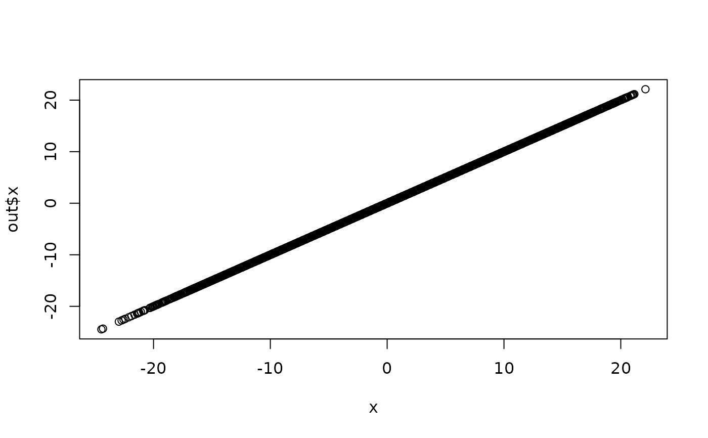
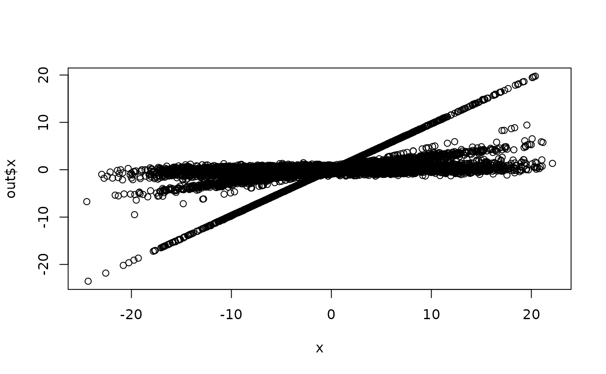

Approximate the soution to a linear system \(Hq = b\) using truncated conjugate gradient,
without forming the Hessian matrix directly and instead using Hessian-vector products
e.g., using forwards-on-reverse autodiff
Adapted from mcmcsae::CG under GPL-3 licence to use Hessian-vector products
Arguments
- b
vector to solve for
- Hq
efficient Hessian-vector product function, e.g., make_Hq
- x
initial guess for solution
- Minv
preconditioner matrix (uses Identity by default)
- max.it
maximum iterations (often should be less than
length(b))- e
error criterion
- stop_if_nonPD
whether to stop CG if recusion is not positive definite
- silent
Be silent or print progress?
Examples
library(Matrix)
# Settings
n = 10^4
rho = 0.99
# Simulate AR1 process approaching random walk (i.e., ill-conditioned inner problem)
P = bandSparse( n = n, k = c(-1), diagonals = list(rep(1,n)) )
Q = (Diagonal(n) - rho * t(P)) %*% (Diagonal(n) - rho * P)
x = RTMB:::rgmrf0( n= 1, Q = Q )[,1]
y = x + 0.1 * rnorm(n)
which_seen = sample( seq_len(n), size = n/10, replace = FALSE)
y[-which_seen] = NA
nll = function(p){
-dgmrf(p$x, Q = Q, log = TRUE) - sum(dnorm(y, p$x, sd = 0.1, log=TRUE), na.rm=TRUE)
}
parlist = list( x=rnorm(n) )
tape = MakeTape(nll, parlist)
gr = tape$jacfun()
Hq = make_Hq( tape, x = unlist(parlist) )
H = gr$jacfun(sparse = TRUE)
# Test unregularized solution
b = gr(unlist(parlist))[1,]
Hess = H(unlist(parlist))
x = solve( Hess, b)
out = CG(
b = b,
Hq = Hq
)
plot( x, out$x )

# Test trust-region regularization
Hess2 = Hess + 2 * Diagonal(n=n)
x2 = solve( Hess2, b)
out = CG(
b = b,
Hq = \(b,...) Hq(b,...) + 2*b
)
plot( x2, out$x )
